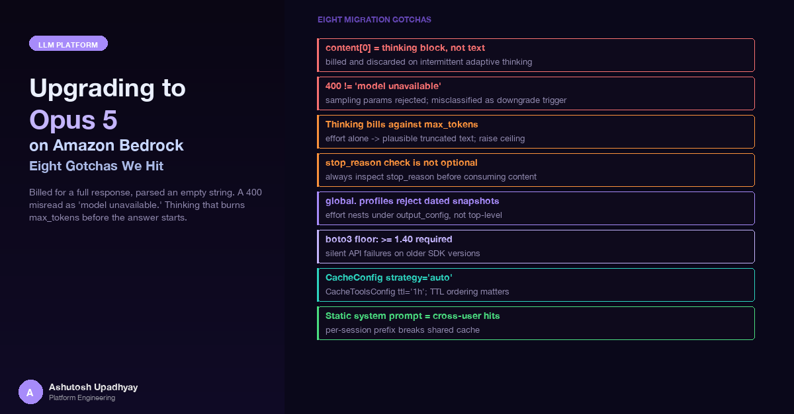

Billed for a full response, parsed an empty string. A 400 misread as "model unavailable." Thinking that burns max_tokens before the answer starts. The migration was worth it — but not without friction.
The first real Opus 5 call in our staging environment returned a full bill and an empty string — that thinking-block trap is the starting point for the section below.
This post documents eight production gotchas from migrating a multi-stage research agent platform from Claude Sonnet to global.anthropic.claude-opus-5 on Amazon Bedrock. The migration was worth it — the quality improvement on synthesis tasks was real and measurable. But the path from "swap the model ID" to "this is actually working correctly" took more than a weekend. If you're planning a similar migration, here is what we would have liked to know in advance.
Two of the Opus 5 breaking changes are documented in full in FinOps for Agentic AI and only need a brief recap here. First, content[0]["text"] returns an empty string when the first block is a thinking block — not an error, just silently empty; the fix is to filter content blocks by type == "text" rather than index by position. Second, temperature / top_p are rejected with a ValidationException on Opus 5; if your error handler classifies any ValidationException as "model not available," it silently downgrades to a fallback model — a request defect must surface as an error, not a substitution.
Two details are specific to Opus 5 that weren't in the earlier post: if you're using Strands' BedrockModel on the Converse path, you're unaffected by the content-block issue — Strands parses reasoningContent correctly; only raw invoke_model callers need the type-filter fix. And Opus 4.6 and earlier still accept temperature, so a blanket strip across all Anthropic models breaks older versions — apply the parameter strip by version family, not globally.
We initially assumed that Opus 5's extended thinking was always active — that every call would produce a thinking block and pay thinking-token costs. That assumption was wrong.
With no explicit thinking field in the request, Opus 5 elects whether to think based on the difficulty of the prompt. Simple or short prompts return blocks=['text'] with thinking_tokens=0. Complex reasoning tasks return blocks=['thinking','text']. This is true on both the raw invoke_model path and the Converse path.
To disable thinking explicitly — for example, in a high-volume, low-complexity workflow where you want predictable latency:
# Raw invoke_model
body["thinking"] = {"type": "disabled"}
# Strands BedrockModel (Converse path)
model = BedrockModel(
model_id="global.anthropic.claude-opus-5",
additional_request_fields={"thinking": {"type": "disabled"}}
)Hard constraint: disabled thinking works only at effort high or below. Combining effort: "max" with "thinking": {"type": "disabled"} throws a ValidationException. This is validated per request — a later call that raises effort will fail even if earlier calls in the same session passed. Don't disable thinking casually; the Bedrock docs document two failure modes it can trigger: tool calls emitted as plain text (silently never executed) and <thinking> tags leaking into output. Lower effort instead if cost is the concern.
This is the most consequential gotcha. On Opus 5, reasoning tokens bill against the same max_tokens ceiling as the text response. With no effort bound, thinking expands to consume as much of that budget as it can — and the text response is truncated, or never emitted at all.
We measured this on Bedrock Converse with global.anthropic.claude-opus-5, varying effort and the max_tokens floor on a fixed reasoning-heavy prompt:
| Configuration | stop_reason | Output tokens | Chars in response |
|---|---|---|---|
| No effort, cap 1024 | max_tokens | 1024 | 0 — empty |
| effort=low, cap 1024 | max_tokens | 1024 | 2800 — truncated mid-sentence |
| No effort, floor 8000 | ReadTimeoutError | — | Thinking ran unbounded |
| effort=low + floor 8000 | end_turn | 2693 | 7780 — clean |
The second row is the dangerous one: effort=low alone returns plausible text that is cut off mid-sentence. An empty response is obviously broken and you notice immediately. A truncated response silently grades as a wrong answer, a bad summary, or — if you're expecting JSON — a parse failure you'll attribute to prompt formatting.
Both knobs are required, and testing them together hides the problem. If you set both effort and a generous max_tokens in your initial tests, everything looks fine. Only when one of those is absent does the truncation appear. Test the knobs independently — set effort without raising the cap, and see whether the response is complete.
The stop_reason field tells you whether output is complete. Always check it before doing anything with the response:
response = converse_client.converse(...)
stop_reason = response["stopReason"]
if stop_reason == "max_tokens":
# Response is incomplete — raise an error specific to this condition.
# Do NOT score this. Do NOT return it to users. Do NOT log it as a model failure.
# It is a harness/config limit, not a model weakness.
raise TokenBudgetExceededError(
f"Response truncated at {response['usage']['outputTokens']} tokens. "
"Raise max_tokens or lower effort."
)
# Only process if stop_reason == "end_turn"
text = extract_text_from_converse_response(response)One more fingerprint worth knowing: if outputTokens is at exactly the max_tokens cap and reasoning_tokens is zero or absent, the thinking consumed the entire budget and no text was emitted. You paid full price for nothing, and Converse may report it as a success.
Grade the grader too. If you have an LLM-as-judge evaluation harness, the same truncation issue applies to the judge. We fixed our internal model-evaluation harness's candidate path but missed the judge — which was running at a 4096 cap with effort=medium and no stop_reason check. A truncated judge verdict that happened to parse as valid JSON produced a real score from an incomplete deliberation. We were diagnosing model quality differences that were actually evaluation harness artifacts. Check stop_reason in every LLM call, including the judge.
Bedrock's Converse API has no top-level effort field. Effort must go inside additionalModelRequestFields, nested under output_config:
# Correct nesting
response = bedrock_client.converse(
modelId="global.anthropic.claude-opus-5",
messages=[...],
additionalModelRequestFields={
"output_config": {"effort": "medium"},
"thinking": {"type": "adaptive"}
},
inferenceConfig={"maxTokens": 8000}
)Both {"effort": "medium"} and {"effort": {"type": "medium"}} at the top level of additionalModelRequestFields throw ValidationException. The error message mentions the field name but not the nesting requirement, so this one costs time to debug by elimination.
It's worth verifying that effort is actually doing something, not just being silently ignored. We measured output tokens on a fixed reasoning-heavy prompt across effort levels on global.anthropic.claude-opus-5:
| Effort level | Output tokens (same prompt) |
|---|---|
| low | 1218 |
| medium | 1811 |
| high | 2972 |
The parameter is live. A misconfigured effort value that throws a ValidationException and falls back to default isn't neutral — it changes the thinking depth and therefore the output quality and cost of every call.
Opus 5 on Bedrock is accessed via the global. cross-region inference profile: global.anthropic.claude-opus-5. These profiles do not support dated snapshot suffixes:
global.anthropic.claude-opus-5 # resolves
global.anthropic.claude-opus-5:0 # ValidationException
global.anthropic.claude-sonnet-4-6:0 # ValidationExceptionThat means you cannot version-pin Opus 5 on Bedrock. If you need a reproducible model version for an LLM judge or a grading baseline — where you want to be able to say "this score was produced by model version X" — the global. alias is the permanent answer. Bedrock's Converse response echoes back the ID you sent; it does not resolve to or report the underlying snapshot that served the call.
Do not write a plausible dated ID as a placeholder. A hand-constructed ID like global.anthropic.claude-opus-5-20260901-v1:0 looks valid, passes a regex-based format check, and then fails at Bedrock with a ValidationException that reads like "model unavailable." You'll spend time debugging access rather than the ID itself. For global. profiles, "no dated snapshot" is the permanent answer — record that limitation explicitly rather than leaving a TODO.
This has a practical implication for evaluation infrastructure. Any score produced by a global. model is attributable to a name, not a version. For a production workload that's acceptable. For an evaluation baseline you intend to compare against in six months, it means your grading foundation can shift without warning. If you need full reproducibility, Haiku 4.5 is the only Bedrock model where a dated snapshot resolves successfully:
global.anthropic.claude-haiku-4-5-20251001-v1:0 # resolvesFor everything else, document the provenance limitation explicitly and build a nightly drift check if the evaluation results need to stay stable. See Benchmarking LLMs in the Enterprise for a broader treatment of model version stability in evaluation pipelines.
This one is easy to miss because the failure mode is silent. botocore 1.35.x parses Opus 5's Converse reasoningContent field as SDK_UNKNOWN_MEMBER and drops it. If your code relies on the Strands BedrockModel reasoning output, the reasoning simply isn't there — no error, no warning, just missing data.
The floor is boto3>=1.40.0. If your environment was pinned at >=1.35.0 (which was sufficient for the previous model generation), the thinking output disappears silently when you upgrade to Opus 5.
# requirements.txt — wrong floor for Opus 5
boto3>=1.35.0 # ← SDK_UNKNOWN_MEMBER on reasoningContent
# Correct
boto3>=1.40.0Check this before anything else if reasoning output looks absent or incomplete after a model upgrade.
Before the migration, our Sonnet deployment had a 70.5% cache hit rate on the message-level cache. That figure is worth pausing on: 70.5% sounds decent until you look at what it means. Roughly 30% of input tokens were paying full price, and the miss rate was caused by a code issue — there was no per-turn message cache point being injected. The gap drove us to fix the caching setup as part of the Opus 5 migration rather than after it.
The Strands 1.51.0 API for prompt caching changed. The old string-based flags are deprecated:
# Old API (Strands <1.51.0) — deprecated, raises UserWarning
model = BedrockModel(
model_id="global.anthropic.claude-opus-5",
cache_prompt="default",
cache_tools="default"
)# New API (Strands 1.51.0+)
from strands.models.bedrock import BedrockModel, CacheConfig, CacheToolsConfig
model = BedrockModel(
model_id="global.anthropic.claude-opus-5",
cache_config=CacheConfig(strategy="auto"), # message cachePoint per turn; 5m TTL
cache_tools=CacheToolsConfig(type="default", ttl="1h"), # tools are static — 1h TTL
max_tokens=16000
)There are three details in this migration that are easy to get wrong:
Cache entries with longer TTL must appear before entries with shorter TTL in the request. In the configuration above, the tools cache (1h TTL) appears before the message cache (5m TTL). That ordering is correct and required. Reverse it and the request will fail validation.
Opus 5 and Sonnet 4.6 allow 4 cache checkpoints per request. A typical configuration uses: system prompt (1) + tools (1) + messages (1) = 3 checkpoints. You have one checkpoint of headroom. If your agent architecture adds more checkpoints than the budget allows, the extra ones are silently dropped — they don't error, they just don't cache.
Bedrock's prompt cache is keyed on the exact token content of the cached prefix. If your system prompt includes anything user-specific — an email address, a user ID, a role interpolated from an identity context — every user gets a different cache key and there are zero cross-user hits. The system prompt cache write cost is paid on every session start rather than being amortized across users.
The fix: move user identity out of the system prompt entirely. Put it in the first human turn message instead. In agent code, read user identity server-side from a request-scoped context variable when tools need it — never interpolate it into a prompt that participates in caching. With a static system prompt, every user who sends a similar request hits the same warm cache entry.
Cache reads cost roughly one-tenth of a standard input token; cache writes cost roughly 1.25×. A single cache hit on a large system prompt more than pays for the write. At production scale, the economics of cross-user cache hits depend entirely on whether the system prompt is static. Bedrock reports cacheReadInputTokens and cacheWriteInputTokens separately in the usage block — capture both, because cached tokens shift out of the standard input_tokens counter and cost reporting will undercount if you only look at the latter.
For a broader view of how model cost attribution works in a multi-agent system, see FinOps for Agentic AI.
content[0]["text"] pattern with a type-filtered join. Thinking blocks are first when present; position-based indexing fails intermittently based on prompt complexity.temperature, top_p, and top_k for the Opus 5 / Sonnet 5 family only — not for all Anthropic models. Fix error classification so a ValidationException on bad parameters does not trigger a silent model downgrade.effort: "max" with "thinking": {"type": "disabled"}. This throws a ValidationException per request.max_tokens together. Effort alone produces truncated text. A generous cap alone produces a timeout. Both are required for a clean response. Test the knobs in isolation.stop_reason. max_tokens means the output is incomplete. Raise a distinct error; do not score or surface a truncated response. Apply this check to every LLM call — including judge calls in evaluation harnesses.output_config inside additionalModelRequestFields. Top-level effort throws a ValidationException.global. profiles do not support dated snapshot suffixes. Version pinning is not available for Opus 5 or Sonnet 4.6 on Bedrock. Document the provenance limitation; do not write a placeholder dated ID.>=1.40.0. Earlier botocore versions silently drop reasoningContent as SDK_UNKNOWN_MEMBER.CacheConfig / CacheToolsConfig. String-based cache flags are deprecated in Strands 1.51.0. Keep tools TTL (1h) before message TTL (5m) in the request. Make the system prompt a plain constant with no user interpolation to enable cross-user cache hits.